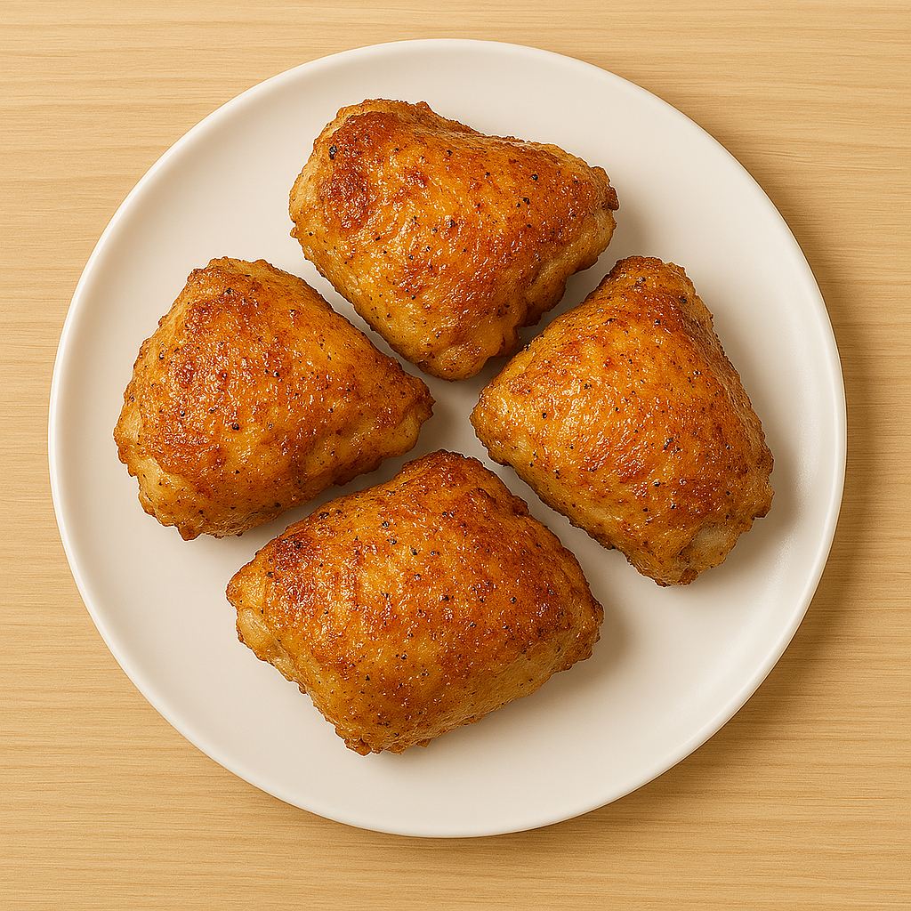

Crispy and Tender Baked Chicken Thighs Recipe

Description
These crispy chicken thighs will quickly earn a permanent place in your dinner rotation. Seasoned bone-in chicken thighs are baked to crispy perfection on the outside, but remain wonderfully juicy on the inside.
This budget-friendly main dish features a homemade spice rub (made with garlic salt, onion salt, oregano, thyme, paprika, and black pepper) that will impress even your pickiest dinner guests.
Ingredients
- cooking spray
- 8 bone-in, skin-on chicken thighs
- ¼ teaspoon garlic salt
- ¼ teaspoon onion salt
- ¼ teaspoon dried oregano
- ¼ teaspoon ground thyme
- ¼ teaspoon ground paprika
- ¼ teaspoon ground black pepper
Steps
- Preheat the oven to 350 degrees F (175 degrees C). Line a baking sheet with aluminum foil; spray foil with cooking spray.
- Arrange chicken thighs, skin-side up, on the prepared baking sheet.
- Combine garlic salt, onion salt, oregano, thyme, paprika, and pepper in a small bowl; mix until well combined.
- Sprinkle spice mixture liberally over chicken thighs.
- Bake chicken in the preheated oven until skin is crispy, thighs are no longer pink at the bone, and the juices run clear, about 1 hour. An instant-read thermometer inserted near the bone should read 165 degrees F (74 degrees C).
- Serve hot and enjoy!
Home